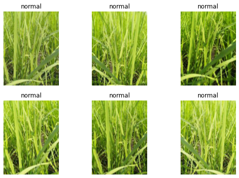

# install fastkaggle if not availabletry: import fastkaggleexcept ModuleNotFoundError:!pip install -q fastkagglefrom fastkaggle import*
WARNING: Running pip as the 'root' user can result in broken permissions and conflicting behaviour with the system package manager. It is recommended to use a virtual environment instead: https://pip.pypa.io/warnings/venv
This is part 2 of the Road to the Top series, in which I show the process I used to tackle the Paddy Doctor competition, leading to four 1st place submissions. If you haven’t already, first check out part 1.
Going faster
First we’ll repeat the steps we used last time to access the data and ensure all the latest libraries are installed:
ERROR: pip's dependency resolver does not currently take into account all the packages that are installed. This behaviour is the source of the following dependency conflicts.
tensorflow-io 0.21.0 requires tensorflow-io-gcs-filesystem==0.21.0, which is not installed.
tensorflow 2.6.4 requires absl-py~=0.10, but you have absl-py 1.0.0 which is incompatible.
tensorflow 2.6.4 requires numpy~=1.19.2, but you have numpy 1.21.6 which is incompatible.
tensorflow 2.6.4 requires six~=1.15.0, but you have six 1.16.0 which is incompatible.
tensorflow 2.6.4 requires wrapt~=1.12.1, but you have wrapt 1.14.1 which is incompatible.
tensorflow-transform 1.8.0 requires tensorflow!=2.0.*,!=2.1.*,!=2.2.*,!=2.3.*,!=2.4.*,!=2.5.*,!=2.6.*,!=2.7.*,<2.9,>=1.15.5, but you have tensorflow 2.6.4 which is incompatible.
tensorflow-serving-api 2.8.0 requires tensorflow<3,>=2.8.0, but you have tensorflow 2.6.4 which is incompatible.
rich 12.4.4 requires typing-extensions<5.0,>=4.0.0; python_version < "3.9", but you have typing-extensions 3.10.0.2 which is incompatible.
pytorch-lightning 1.6.3 requires typing-extensions>=4.0.0, but you have typing-extensions 3.10.0.2 which is incompatible.
pytools 2022.1.9 requires typing-extensions>=4.0; python_version < "3.11", but you have typing-extensions 3.10.0.2 which is incompatible.
flax 0.5.0 requires typing-extensions>=4.1.1, but you have typing-extensions 3.10.0.2 which is incompatible.
flake8 4.0.1 requires importlib-metadata<4.3; python_version < "3.8", but you have importlib-metadata 4.11.4 which is incompatible.
apache-beam 2.38.0 requires dill<0.3.2,>=0.3.1.1, but you have dill 0.3.5.1 which is incompatible.
apache-beam 2.38.0 requires httplib2<0.20.0,>=0.8, but you have httplib2 0.20.4 which is incompatible.
aioitertools 0.10.0 requires typing_extensions>=4.0; python_version < "3.10", but you have typing-extensions 3.10.0.2 which is incompatible.
aiobotocore 2.3.2 requires botocore<1.24.22,>=1.24.21, but you have botocore 1.26.7 which is incompatible.
why kaggle gpu is much slower for training and how does fastai to fix it with resize_images
A big issue I noticed last time was that originally I created the notebook on my home PC, and each epoch of the resnet we created took under 20 seconds to run. But on Kaggle they took over 3 minutes each! Whilst Kaggle’s GPUs are less powerful than what I’ve got at home, that doesn’t come close to explaining this vast difference in speed.
I noticed when Kaggle was running that the “GPU” indicator in the top right was nearly empty, and the “CPU” one was always full. This strongly suggests that the problem was that Kaggle’s notebook was CPU bound by decoding and resizing the images. This is a common problem on machines with poor CPU performance – and indeed Kaggle only provides 2 virtual CPUs at the time of writing.
We really need to fix this, since we need to be able to iterate much more quickly. What we can do is to simply resize all the images to half their height and width – which reduces their number of pixels 4x. This should mean an around 4x increase in performance for training small models.
Luckily, fastai has a function which does exactly this, whilst maintaining the folder structure of the data: resize_images.
how to create a new folder with Path
trn_path = Path('sml')
how to resize all images (including those in subfolders) of train_images folder and save them into a new destination folder; max_size = 256 does shrink the total size by 4+, but question: how Jeremy pick 256 not 250;
how to wrap dataloaders creation, model creation, fine tuning together in a func train and return the trained model; how use model architecture, item transforms, and batch transforms, and num of epochs as the params of the train function;
In this notebook, we’ll be experimenting with a few different architectures and image processing approaches (item and batch transforms). In order to make this easier, we’ll put our modeling steps together into a little function which we can pass the architecture, item transforms, and batch transforms to:
Our item_tfms already resize our images to small sizes, so this shouldn’t impact the accuracy of our models much, if at all. Let’s re-run our resnet26d to test.
Downloading: "https://github.com/rwightman/pytorch-image-models/releases/download/v0.1-weights/resnet26d-69e92c46.pth" to /root/.cache/torch/hub/checkpoints/resnet26d-69e92c46.pth
epoch
train_loss
valid_loss
error_rate
time
0
1.875997
1.478083
0.445459
00:36
epoch
train_loss
valid_loss
error_rate
time
0
1.268640
1.031712
0.343585
00:33
1
0.989115
0.701631
0.223931
00:33
2
0.708181
0.527319
0.161941
00:33
3
0.522309
0.405053
0.127343
00:33
4
0.428306
0.388762
0.121576
00:33
That’s a big improvement in speed, and the accuracy looks fine.
A ConvNeXt model
How to tell whether a larger pretrained model would affect our training speed by reading GPU and CPU usage bar? why to pick convnext_small for our second model;
I noticed that the GPU usage bar in Kaggle was still nearly empty, so we’re still CPU bound. That means we should be able to use a more capable model with little if any speed impact. Let’s look again at the options in The best vision models for fine-tuning. convnext_small tops the performance/accuracy tradeoff score there, so let’s give it a go!
how to load and use a new pretrained model in fastai
Downloading: "https://dl.fbaipublicfiles.com/convnext/convnext_small_22k_224.pth" to /root/.cache/torch/hub/checkpoints/convnext_small_22k_224.pth
epoch
train_loss
valid_loss
error_rate
time
0
1.371264
0.853445
0.270062
00:42
epoch
train_loss
valid_loss
error_rate
time
0
0.716509
0.541614
0.186449
00:54
1
0.539565
0.378337
0.117251
00:54
2
0.362223
0.235239
0.073522
00:53
3
0.208453
0.179712
0.058626
00:54
4
0.142692
0.157421
0.045651
00:53
Wow our error rate has halved! That’s a great result. And, as expected, the speed hasn’t gone up much at all. This seems like a great model for iterating on.
Preprocessing experiments
question: why trying different ways of cutting images could possibly improve model performance; what are the proper options for cutting images or preparing images
So, what shall we try first? One thing which can make a difference is whether we “squish” a rectangular image into a square shape by changing it’s aspect ratio, or randomly crop out a square from it, or whether we add black padding to the edges to make it a square. In the previous version we “squished”. Let’s try “crop” instead, which is fastai’s default:
how to try cutting image with crop instead of squish
During inference or validation, creating multiple versions of each image, using data augmentation, and then taking the average or maximum of the predictions for each augmented version of the image.
Before trying that out, we’ll first see how to check the predictions and error rate of our model without TTA:
how to check the performance of our model on validation set
how to display the transformations which have been done to a single image in the training set
That’s the same error rate we saw at the end of training, above, so we know that we’re doing that correctly.
Here’s what our data augmentation is doing – if you look carefully, you can see that each image is a bit lighter or darker, sometimes flipped, zoomed, rotated, warped, and/or zoomed:
learn.dls.train.show_batch(max_n=6, unique=True)

how to do TTA on validation set
If we call tta() then we’ll get the average of predictions made for multiple different augmented versions of each image, along with the unaugmented original:
tta_preds,_ = learn.tta(dl=valid)
how to calc the error rate of the tta_preds
Let’s check the error rate of this:
error_rate(tta_preds, targs)
TensorBase(0.0485)
That’s a huge improvement! We’ll definitely want to use this for any submission we make!
Scaling up
how to scale up on the model using padding and the tta approach in terms of image size and epoch number
Now that we’ve got a pretty good model and preprocessing approach, let’s scale it up to larger images and more epochs. We’ll switch back our path to the original un-resized images, and use 12 epochs using our best settings so far, with larger final augmented images:
Once again, we get a big boost from TTA. This is one of the most under-appreciated deep learning tricks, in my opinion! (I’m not sure there’s any other frameworks that make it quite so easy, so perhaps that’s part of the reason why…)
Submission
how to use TTA to predict instead of the usual get_preds to get predictions on the test set
We’re now ready to get our Kaggle submission sorted. First, we’ll grab the test set like we did in the last notebook:
We need to indices of the largest probability prediction in each row, since that’s the index of the predicted disease. argmax in PyTorch gives us exactly that:
idxs = preds.argmax(dim=1)
how to replace index with vocab or classes
Now we need to look up those indices in the vocab. Last time we did that using pandas, although since then I realised there’s an even easier way!:
how to submit prediction csv to kaggle with comment using fastkaggle api
ifnot iskaggle:from kaggle import api api.competition_submit_cli('subm.csv', 'convnext small 256x192 12 epochs tta', comp)
how to push local notebook to Kaggle online
This gets a score of 0.9827, which is well within the top 25% of the competition – that’s a big improvement, and we’re still using a single small model!
# This is what I use to push my notebook from my home PC to Kaggleifnot iskaggle: push_notebook('jhoward', 'small-models-road-to-the-top-part-2', title='Small models: Road to the Top, Part 2',file='small-models-road-to-the-top-part-2.ipynb', competition=comp, private=True, gpu=True)
Conclusion
We’ve made a big step today, despite just using a single model that trains in under 20 minutes even on Kaggle’s rather under-powered machines. Next time, we’ll try scaling up to some bigger models and doing some ensembling.
If you found this notebook useful, please remember to click the little up-arrow at the top to upvote it, since I like to know when people have found my work useful, and it helps others find it too. And if you have any questions or comments, please pop them below – I read every comment I receive!